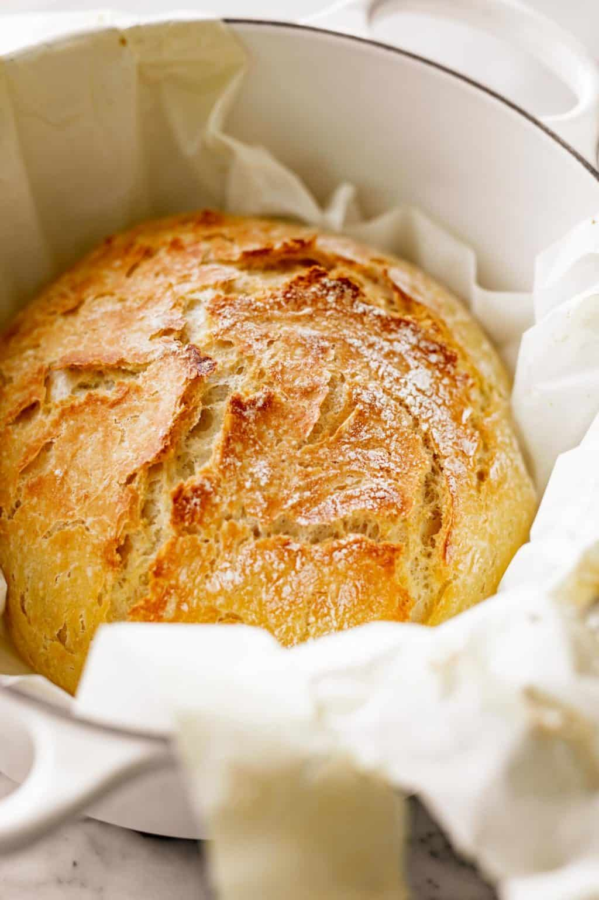

Artisan Bread

Description
t looks too good to be true, I know. Fluffy, crusty bread with no effort?
No way. But ever since we first saw this recipe a few years ago, we have
been baking it just about every week. Now you will too! Beginner bakers
rejoice: no intimidation needed!
Ingredients
- 3 cups bread flour, or plain/all purpose (15.8 oz. or 450g)
- 1 tablespoon white granulated sugar
- 2 teaspoons dried, instant or rapid rise yeast
- 1 1/2 teaspoons salt
- 1 1/2 cups (375 ml) warm water
- 1 tablespoon (15 ml) olive oil
Steps
-
Combine flour, sugar, yeast and salt in a large bowl. Add water and oil,
mixing to incorporate all of the ingredients together. Dough will be
wet, sticky and shaggy.
-
Lightly spray the top with cooking oil spray. Cover with plastic wrap
and place a dry tea towel over the top.
-
Leave in a warm, draft-free place for 2-3 hours, until doubled in size.
Dough will have a lot of little holes or bubbles and be wobbly like
jelly.
-
Place a large (10-inch or 26cm) dutch oven or heavy based pot in the
oven with a lid. Preheat oven to 450°F (230°C) 30 minutes before baking.
-
Lightly flour work surface and plastic spatula with up to 1 tablespoon
flour. Scrape dough out of bowl onto work surface with spatula. Sprinkle
the top of dough with a large pinch of flour and fold it over on itself
with the spatula (about 5-6 folds). Roughly form a round shape.
-
Measure out a large piece of parchment paper, large enough to transfer
the dough into the pot. Place paper next to the dough and roll dough
onto the paper, smooth side up. Carefully move it to the centre of the
paper and reshape if needed, or shake pan a couple of times to evenly
distribute dough. (It will even out while baking.)
-
Loosely cover with plastic wrap and let rest while oven is preheating.
-
Use oven mitts to carefully remove hot dutch oven from oven. Grab the
parchment paper from each end to pick up the dough and transfer it into
the pot.
-
Cover with lid and bake for 30 minutes, then remove lid and bake for an
additional 12-15 minutes, until loaf is beautifully golden browned.
- Transfer to a wire rack to cool for 10 minutes before slicing.